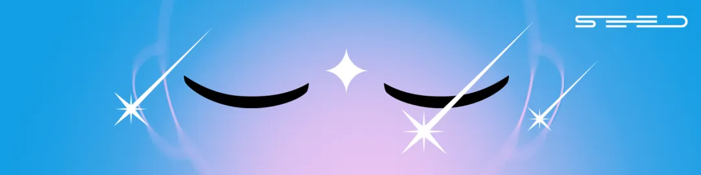
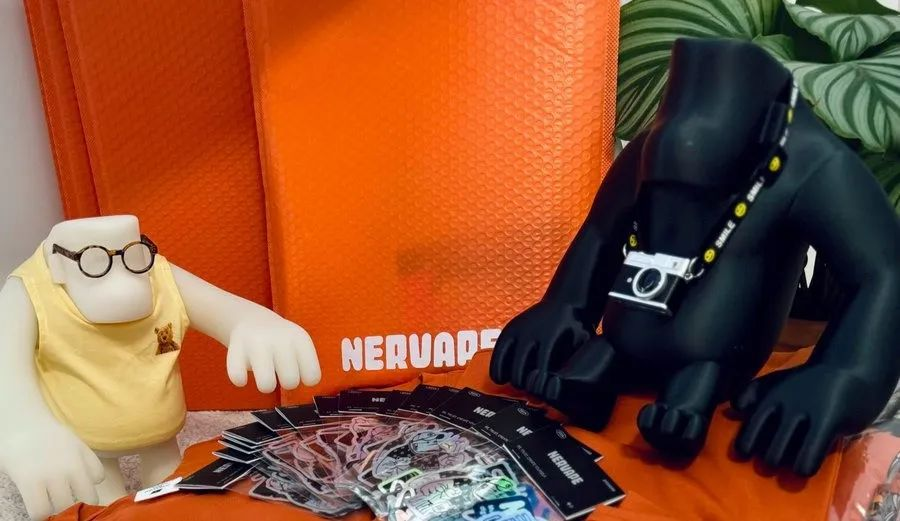
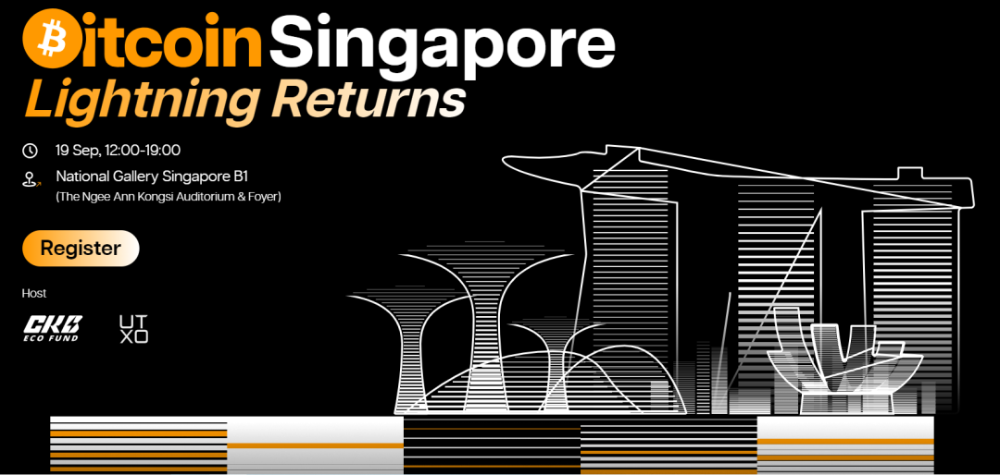
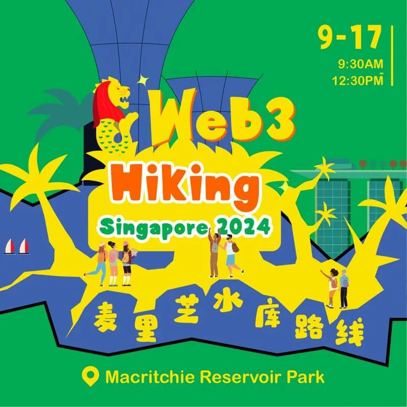

新加坡专题｜分布式遇见 SeeDAO Seed
作者: Token 2049


Seed NFT, 是SeeDAO数字城邦的公民身份证明，也是获得城邦治理权益的认证。每个Seed NFT都是一颗独一无二的种子。
Seed NFT holders，是SeeDAO数字城邦的核心建设者，通过在社区build累积SCR mint Seed 身份 / https://opensea.io/collection/seedaoseed

TOKEN 2049 WEEK 将于 9 月16 日至 22日在新加坡举办，其中主活动TOKEN 2049 Singapore 2024 将于 9 月 18 日至 19 日举办，旨在定义 Web3 领域的下一步发展。据悉周边活动达 500 场之多，盛况空前。最近经常看到、听到的问题是：SeeDAO社区小伙伴听到了，询问和收集一些前往新加坡的Seed成员们：一、9月15日本周日(明天)傍晚五点，最健康的飞盘活动又如约而至Seed holder：Tony 哥 ，SeeDAO 新加坡城市联络人·第一期二、9月17日星期二下午2-4点 Intersubjective Desci
Seed holder：Rebecca，Web3大学 & Deschool 发起人活动介绍：https://lu.ma/6tjxtd1h x: TheRebeccaWONG三、文森特｜Vincent SeeDAO Twitter Space 金牌主持，大家喜欢的、有趣的小伙伴：Happy to discuss your ambitious goals . Feel free to reach out if you’re around; I’d love to catch up and exchange ideas! 🤝 一起喝点小酒 x: zhouKelvinZzzz四、9月17-19日 Token 2049 & Bitcoin Singapore: Lightning ReturnsSeed holder：Ines，SeeDAO S3-5 市政厅成员 x: Nervape_ines主场&side event: 现场抽奖 限量padge 、Token2049限定装备、周边礼盒
五、9月19日 Bitcoin Singapore: Lightning Returns 新加坡国家美术馆
Seed holder: Grace 全球网络项目·第一期，
Our Polis:SeeDAO 清迈两周年生态发布会负责 x: gracegui43

六：Seed holder：SuanNai 市政厅S3品牌负责
报名一个徒步活动，感觉不错 介绍：https://lu.ma/u7hcx3g5
喜欢的成员还有：汉洋 MasterPa，舟舟老师x: c_hongzhou

以上是 Seed 成员们意向去的活动，仅供参考，不做任何建议。
你还有可能在新加坡遇到社区两位发起人，shawn老师，翻译公会老油条 backdoor，行天春彦等
在22号的Network State Conference 遇到定慧和Zoe，敬请关注x: en_SeeDAO
最后，SeeDAO Seed holders 期待您的BUIDL和加入！
See you, SeeDAO
策划&整理：文倩